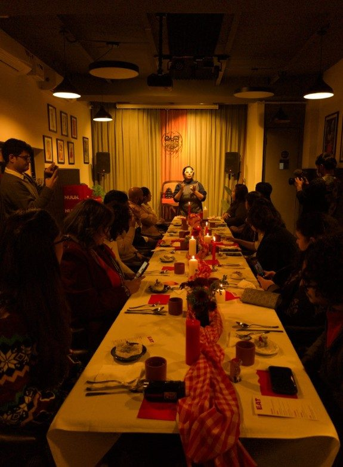
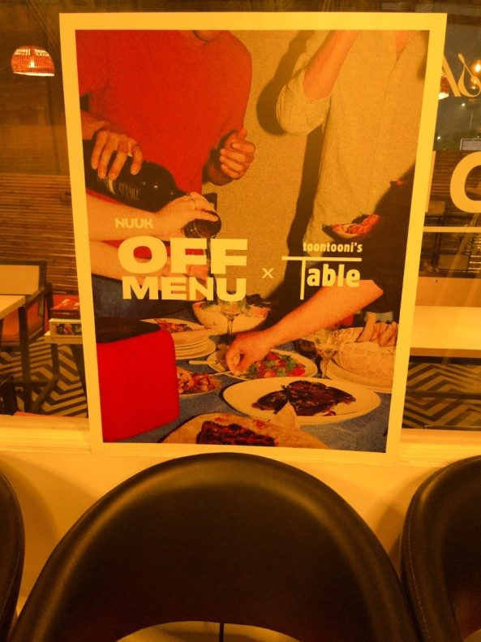
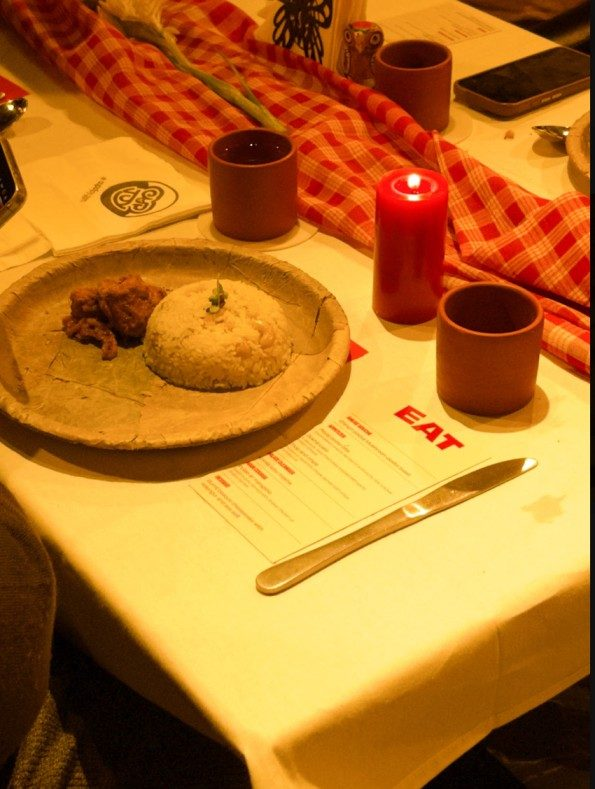
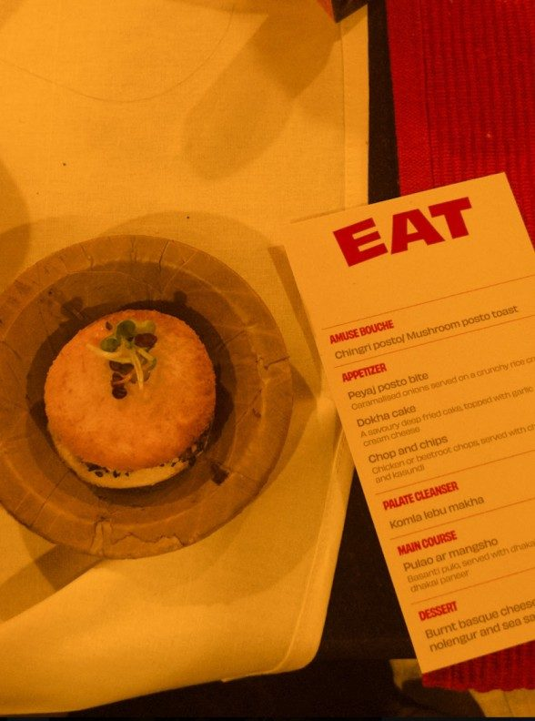
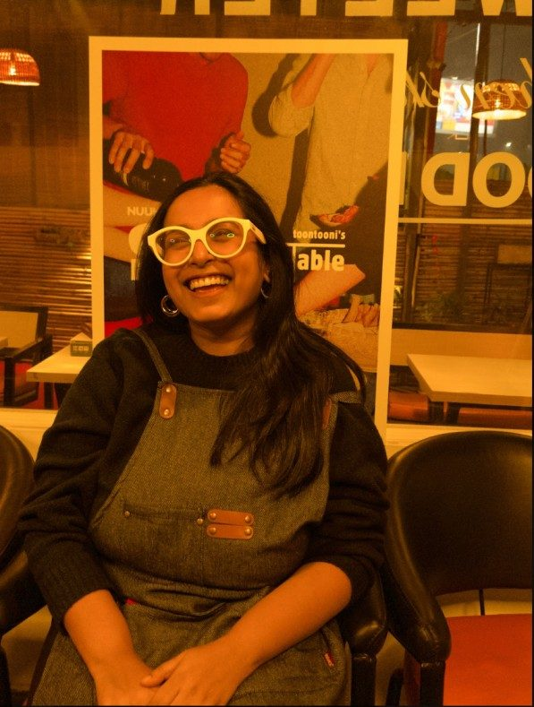
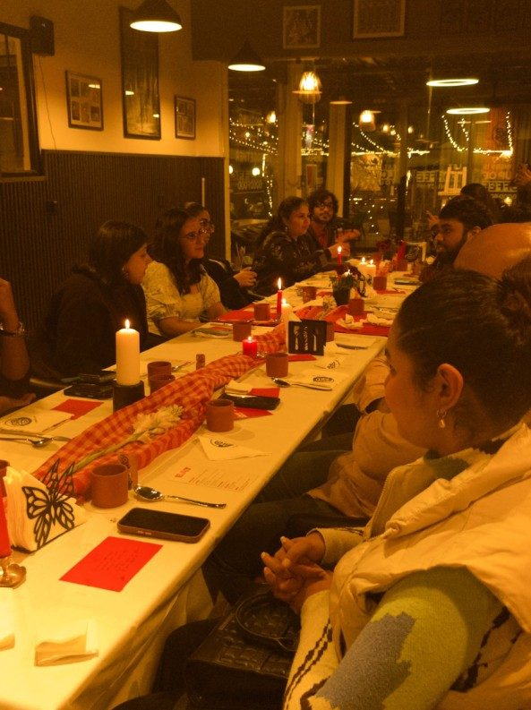

Toontooni's Table × Nuuk
The Modern Bengali Table: Reimagining Heritage Recipes with Nuuk

We often think of heritage recipes as something fixed in time, a formula that must never shift. But at Toontooni's Table, we believe that for a dish to stay alive, it has to evolve.
Our entire philosophy lies in honouring traditional roots and taking them to the global stage with contemporary kitchen techniques.
The Off Menu Pop-Up: Tradition Meets Modern Tech
For our recent Off Menu pop-up, we partnered with Nuuk to explore the delicate balance between classic flavours and modern cooking styles. By utilising Nuuk air fryers, we reimagined iconic Bengali street food classics, like Chingri Posto Toast, achieving a delicate, golden crunch that felt lighter and in vogue.
The rest of the menu, from the sharp bite of our signature Peyaj Posto Bites to a Nolen Gur Burnt Basque Cheesecake, was a study of this contrast too. The evening was filled with gasps of joy and the sighs that accompany a happy, full stomach.
Honouring Our Roots through Innovation
Bringing heritage flavours into a modern kitchen isn't a departure from our roots; it is the most intentional way to honour them. Every Toontooni's Table supper club is curated so guests can experience regional Indian food that surprises them at every turn.
Our purpose is to offer a meal with depth, a room with a soul, and a seat at a truly Modern Bengali Table.
Moments from the Event




